過往在編寫著色器效果時，都必須要透過大量的電腦圖學、數學計算、渲染流程…等知識來輔佐我們，也因為需要這麼多的事前準備，導致學習著色器的門檻相對較高，讓許多程式、非程式人員不敢輕易的轉動這扇門的把手。
而在前些日子中，偶然注意到 Unity 官方所推薦的這一套可視化著色器編輯器 Amplify Shader Editor。透過這套工具，可以使開發者輕易的跨越進入著色器領域的門檻，就算是非程式人員也可以透過 Amplify Shader Editor 來嘗試製作出屬於自己的酷炫效果。
透過這次的文章，希望可以幫助對著色器有興趣的開發者們，了解可視化著色器編輯器 Amplify Shader Editor 的運作方式、基礎使用方法及各項參數介紹。
文章來源：Unity Taiwan
插件來源：Amplify Shader Editor
Amplify Shader Editor 提供了一個對 Unity 開發者相當友善的開發環境，可以與 Unity 編輯器和著色器完美的融合。透過這個工具，開發者能夠輕鬆實現 AAA 級質量的作品，並且能夠相當靈活地應用在任何 Unity 開發專案中，進而縮短製作團隊在美術呈現畫面上的開發時間。
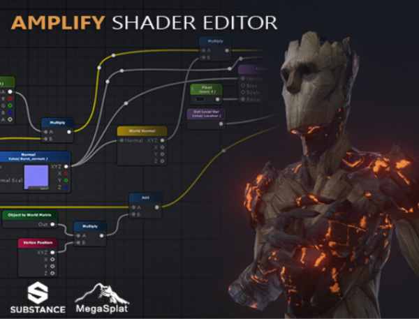
透過這個工具，可以實現一些驚人的 AAA 級效果，例如：
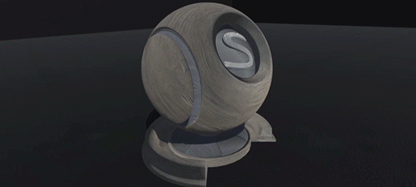
溶解效果（Dissolve Burn Fx）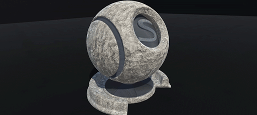
三维映射（Triplanar Mapping）半透明（Translucency）
視差映射（Parallax Mapping）
抖動（Dithering）
Fake Interior
當然，Amplify Shader Editor 還包含了更多效果等你挖掘。
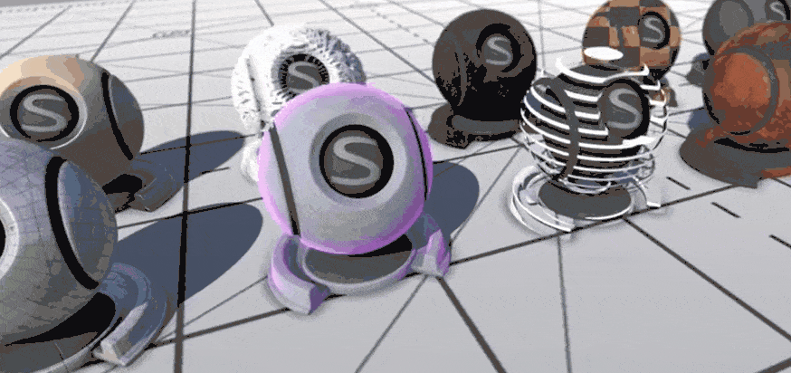
下面就讓我們依次介紹 Amplify Shader Editor 的使用過程與細節介紹，包含安裝流程、基本操作、編輯器介面、材質模式與著色器模式、節點屬性介面以及 ASE 著色器 Hello World。
安裝 Amplify Shader Editor 的步驟相當簡單，只需要三個步驟就可以完成。
步驟 1
開啟 Unity 專案，雙擊 Amplify Shader Editor.unitypackage 將工具匯入專案中。
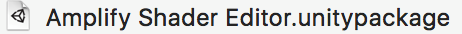
或是透過點擊 Assets > Import Package > Custom Package… ，並選擇 Amplify Shader Editor.unitypackage 進行匯入。
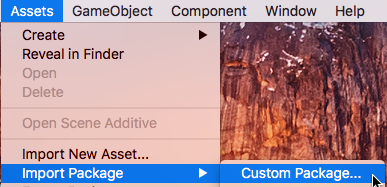
步驟 2
匯入進度條完成後，在 Import Unity Package 畫面中選擇所有資源並點擊 Import 按鈕，將所有資源匯入專案。
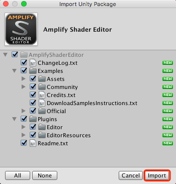
步驟 3
最後為了更好地理解，說明一下 Amplify Shader Editor 目錄結構：
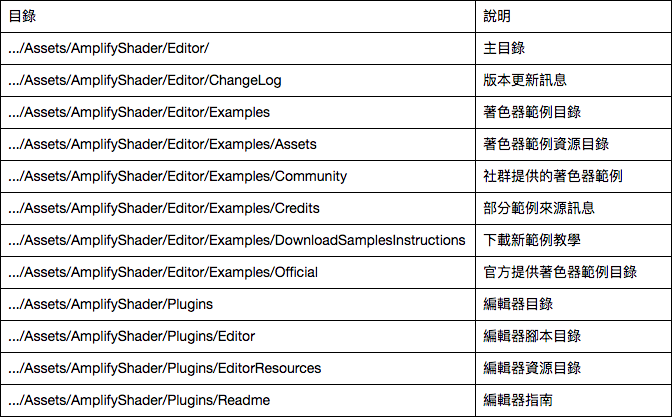
從專案目錄中可以發現，Amplify Shader Editor 事先提供了許多著色器範例，每個範例都包含了單獨的場景（Scene）做效果展示，開發者可以根據需求來直接使用。
開啟 Amplify Shader Editor 編輯器介面
依次點選 Window > Amplify Shader Editor > Open Canvas，或是雙擊 Amplify Shader Editor（以下簡稱 ASE）材質或著色器自動打開編輯器介面。
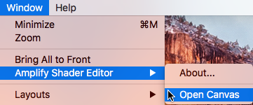
建立 Amplify Surface Shader（表面著色器）
在 Project 面板選取資料夾後，依次點選 Assets > Create > Shader > Amplify Surface Shader，或是在 Project 面板中直接點擊滑鼠右鍵 Create > Shader > Amplify Surface Shader 進行建立。
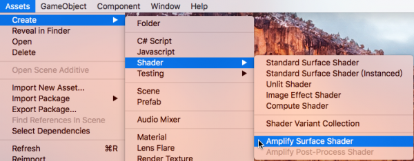
開啟 ASE 著色器編輯畫面
雙擊 ASE 著色器就可以自動開啟編輯畫面。
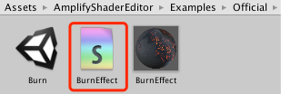
或者可以在選擇 ASE 著色器的情況下，透過 Inspector 面板中的 Open in Shader Editor 按鈕開啟。
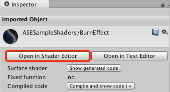
著色器文件命名
可以直接在節點屬性（Node Properties）中的著色器名稱（Shader Name）進行修改，並可以使用正斜線（/）來新增著色器類別。
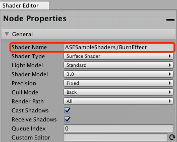
PS：著色器檔案名稱是唯一的，必須在 Project 頁面中手動設置。但檔案與著色器可以使用不同名稱命名。
ASE 著色器定位
此區域在 ASE 編輯介面的左下角，顯示當前的著色器，點擊這個區域可以將 ASE Shader 在專案頁面中定位出來。邊緣的綠框提示當前開啟的著色器。
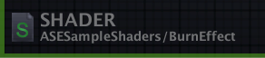
查看 ASE 材質
雙擊 ASE 材質就可以在編輯頁面中開啟。
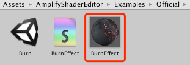
ASE 材質定位
與定位 ASE 著色器相同，可以透過點擊右下角來定位出對應的 ASE 材質，且邊緣的提示框為藍色。
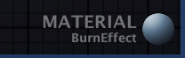
節點屬性介面（Node Properties）
透過點擊編輯器中的各個節點，被選擇的節點會切換為橘色框狀態。該節點的屬性就會在節點屬性介面中顯示出來。若未選擇或選擇複數節點，則會顯示主節點的屬性。
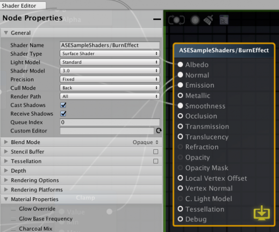
著色器主節點的節點屬性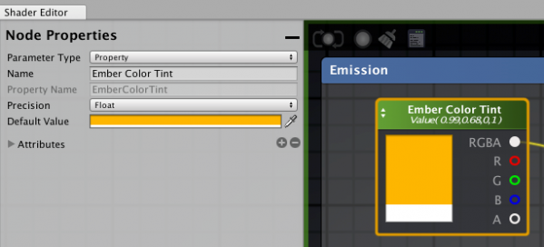
發射器（Emission）的灰燼顏色（Ember Color Tint）節點的節點屬性另外，可以透過點擊節點屬性介面右上角的 “-” 按鈕來將介面最小化，點擊方塊按鈕將介面恢復。
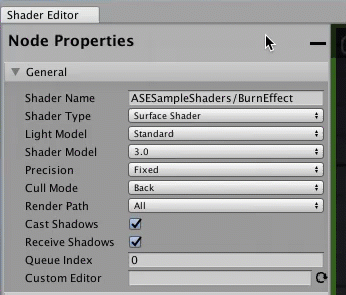
編輯器頂端區域
保存按鈕：保存/更新著色器數據。若是修改著色器名稱，需要點擊這個按鈕後才會正式生效。
自動保存按鈕：開啟時自動保存著色器數據。
清除按鈕：刪除所有無效節點。
文字編輯按鈕：使用文字編輯器開啟著色器文件。
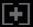
回歸按鈕：選中並定位主節點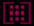
定位按鈕：定位選中的節點。如果沒有選擇節點，將會定位出節點集合。也可以透過雙擊滑鼠左鍵或鍵盤 F 鍵，來進行編輯器介面的自動縮放。
節點選擇介面
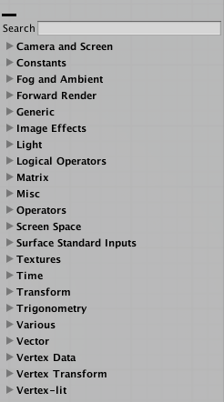
節點選擇介面位於編輯器右側，是一個可以搜尋節點類型的清單，可以找到所需要的節點類型，並直接拖放到編輯器中。和節點屬性介面一樣，可以透過點擊 “-” 按鈕來將介面最小化。
此外也可以在編輯器中點擊滑鼠右鍵，開啟節點選擇介面。
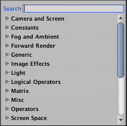
使用快捷鍵建立節點
編輯器中還有一個相當重要的功能，就是可以透過按住快捷鍵後單擊編輯器上的任意位置來建立新節點。在節點選擇介面中，一般會在節點名稱右邊的 [] 中顯示快捷鍵。例如：數字鍵 1 為浮點數（Float）節點，數字鍵 5 為顏色（Color）節點。
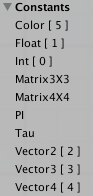
ASE 數據處理流程
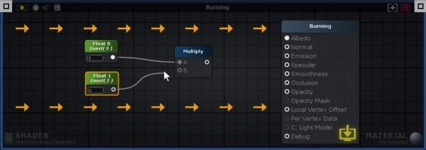
在上圖中我們可以發現，ASE 的數據處理流程是由左至右的，輸入端口 > 數據處理 > 輸出端口。只有直接或間接連接到主節點的節點才會運作，並用於生成著色器代碼。若節點中包含了未連接的輸入端口，ASE 會在處理流程中使用內部數據，而這些內部數據可以透過節點屬性介面來進行編輯。
可視化編輯重點
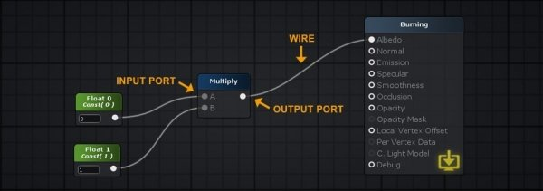
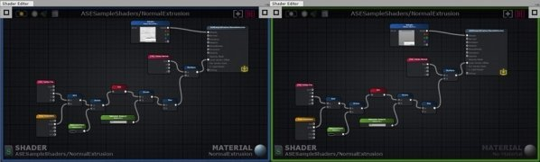
ASE 編輯介面包含兩種編輯模式，材質模式與著色器模式，主要取決於透過什麼方式讀取著色器文件。另外可以藉由畫布的外輪廓顏色來判斷編輯模式，藍色代表材質模式，綠色代表著色器模式。
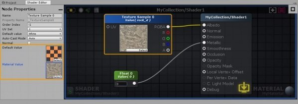
在著色器中設置的數值通常稱為預設值（Default Value）。對任何預設值所做的修改都會自動影響最後的結果。當同時編輯材質和著色器時，需要記得注意哪些屬性有進行變動。
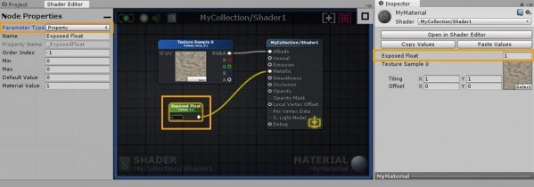
材質預設值與著色器預設值不同，可以將材質理解成著色器實例，每個著色器實例的數據都是唯一的，但使用相同的預設值進行建立。材質參數只有在材質模式時才會顯示。在表示變量（顏色 Color、浮點數 Float、整數 Int、向量 Vector、矩陣 Matrix）的節點中有一個 Parameter Type 下拉選單，可以設置為 Property，以便在材質模式下組合出無限數量的變化。
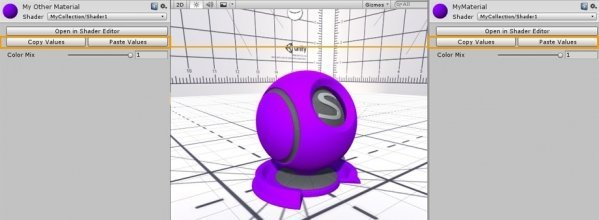
如上圖所示，可以在相同的 ASE 著色器之間進行參數的複製與覆蓋。也可以透過 Open in Shader Editor 按鈕快速打開 Amplify Shader Editor 來編輯著色器與材質。
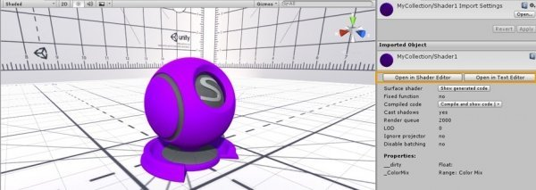
除了使用 Open in Shader Editor 按鈕以外，還可以選擇 Open in Text Editor 按鈕，使用文字編輯器來修改著色器。
其中大部分內容參考 Unity 著色器官方文件：
https://docs.unity3d.com/Manual/SL-Reference.html
主屬性（Main Properties）
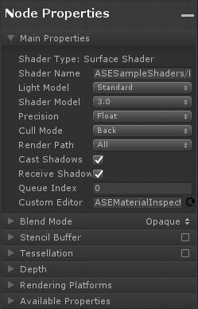
混合模式（Blend Mode）
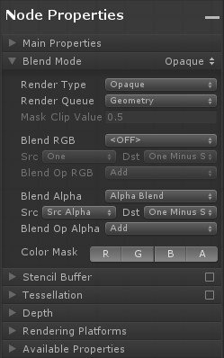
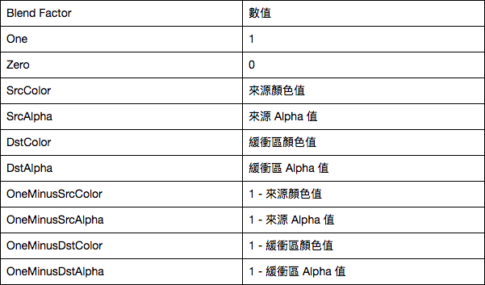
模板緩衝（Stencil Buffer）
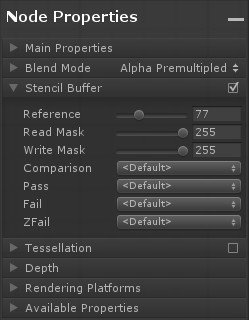
模板緩衝器可以用來作為模板測試使用，用於保存或是拋棄像素。通常每個像素有 8 個位元，進行繪製時會調用該數值來進行模板測試，已決定是否在進入著色器前將像素計算捨棄。
曲面細分（Tessellation）
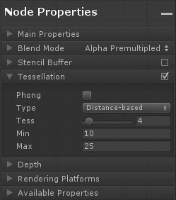
深度（Depth）
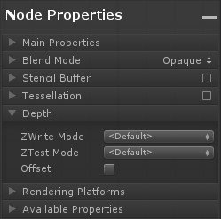
渲染平台（Rendering Platforms）
定義支持平台，預設勾選全部平台。
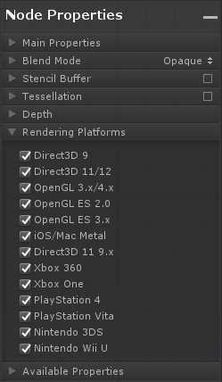
可用變量（Available Properties）
顯示在節點屬性介面中設置為屬性（Property）的變量，可以透過拖動來調整它們的位置。
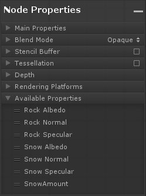
1. 建立 ASE 著色器
依次點選 Create > Shader > Amplify Surface Shader 建立 ASE 著色器，重新命名為 MyShader。
2. 建立 ASE 材質
依次點選 Create > Material 建立 ASE 材質，重新命名為 MyMaterial。
3. 開啟 ASE 著色器編輯模式
點選 MyShader 後，在 Inspector 面板中點選 Open in Shader Editor 開啟 ASE 編輯器。將著色器名稱修改為 MyCollection/Shader1 並保存，最後將 MyShader 著色器與 MyMaterial 材質建立關聯。
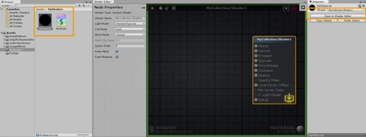
4. 修改光照模型
將光照模型修改為 Standard Specular。
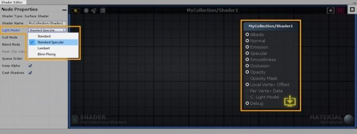
5. 新增 Lerp（線性插值）節點
在畫布中點選滑鼠右鍵開啟節點選單，搜尋 Lerp 並點選新增 Lerp 節點，將 Lerp 輸出節點連接到主節點的 Albedo 輸入節點。
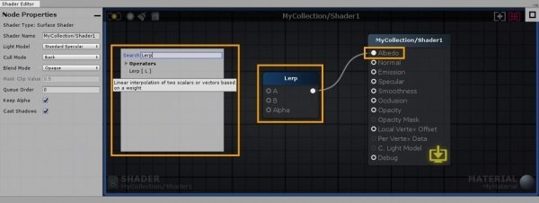
6. 新增 Color（顏色）節點
搜尋並新增兩個 Color 節點。
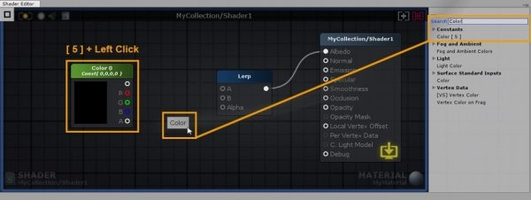
7. 設定 Color 節點
將兩個 Color 節點連接到 Lerp 節點輸入端口。並將 A 節點顏色設為灰色，B 節點顏色設為橘色。
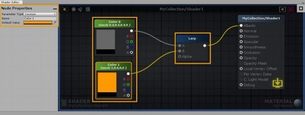
8. 建立不透明度 Float（浮點數）節點
搜尋並建立 Float 節點，並命名為 Color Mix。將其連接到 Lerp 節點的 Alpha 輸入端口，最小值設定為 0，最大值設定為 1，並將參數類型設定為 Property。
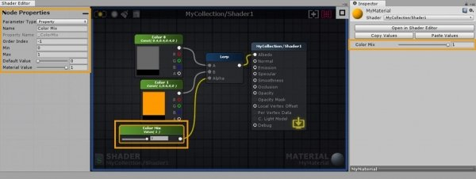
9. 建立平滑、高光 Float 節點
建立 Float 節點並重新命名為 Smoothness Level。將其連接到主節點的 Smoothnes（平滑）輸入端口，最小值設為 0，最大值設為 1，並將參數類型設定為 Property。
建立另一個 Float 節點並重新命名為 Specular Level。將其連接到主節點的 Speculer（高光）輸入端口，最小值設為 0，最大值設為 1，並將參數類型設定為 Property。
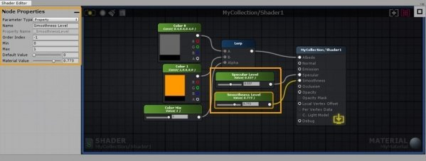
10. 設定法線貼圖
最後我們需要找一張法線貼圖，將貼圖直接拖曳到畫布中並連接到主節點的 Normal（法線）輸入端口。因為這邊使用的法線貼圖具有金屬拉絲質感，所以可以看到著色器會呈現出金屬質感。
到這邊，我們成功的完成了第一個 ASE 著色器，不要忘記點擊更新按鈕來定期保存著色器數據，確保你的工作不會遺失。
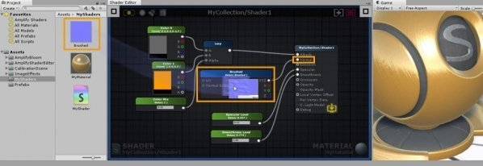
透過這次的文章，可以幫助你了解 ASE 的操作流程以及參數說明，藉由這種可視化的編輯方式，可以大幅降低在編寫著色器時的入門門檻，讓無論是程式、美術以及企劃都能夠嘗試參與畫面呈現的修改與調整。而對於已經有著色器相關基礎的開發者，也可以透過這個工具來理解各種著色器的實作方式，透過文字編輯器來開啟 ASE 所生成的著色器並進行分析、優化效能，以節省著色器的開發時程。